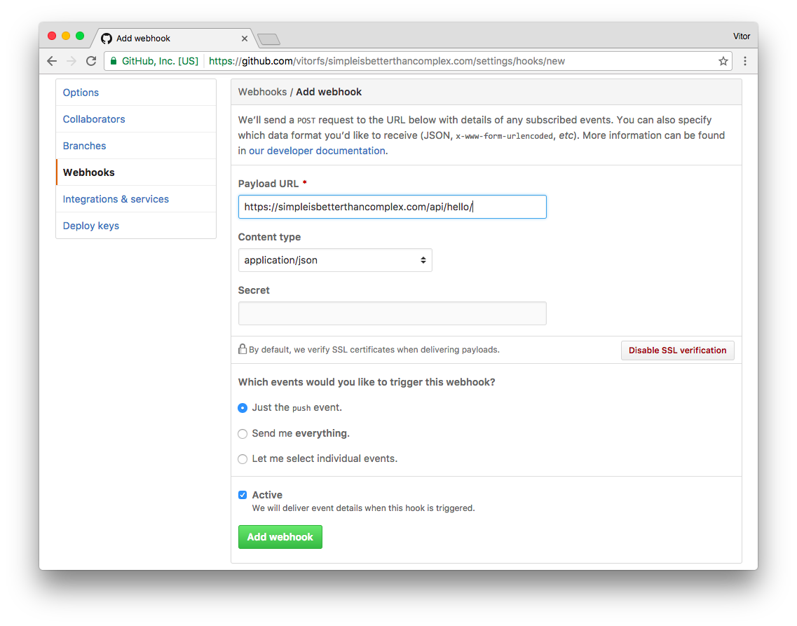
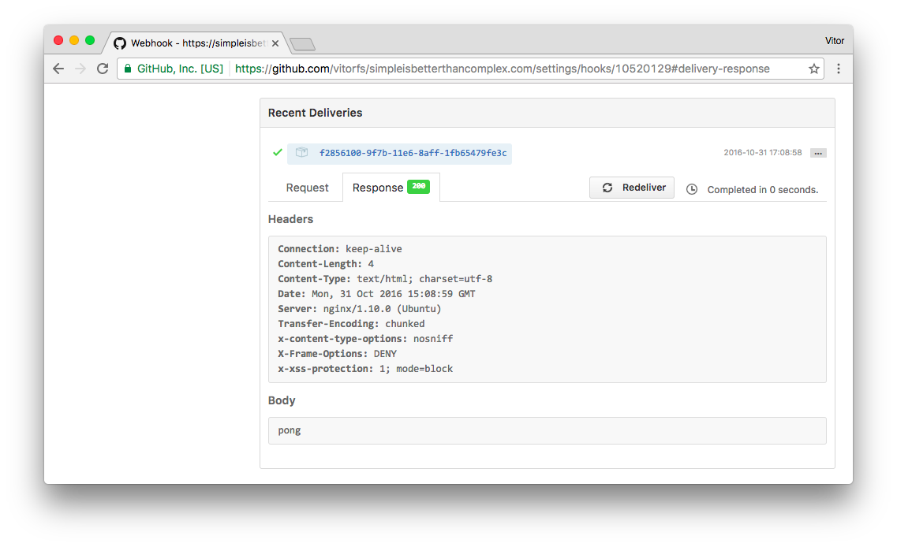
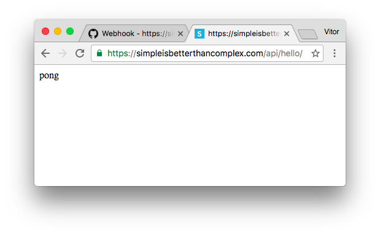
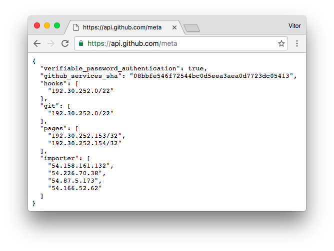
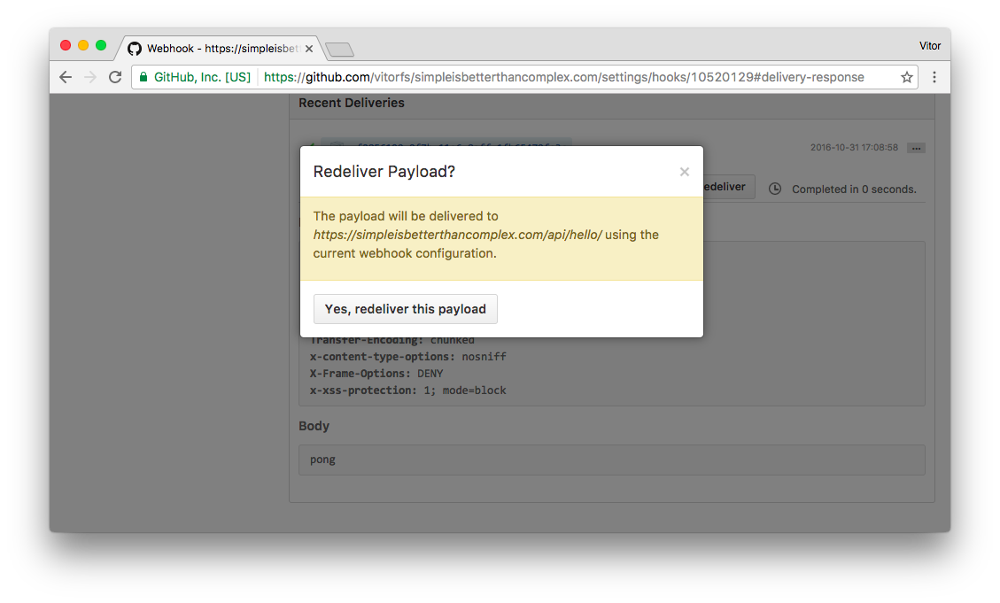
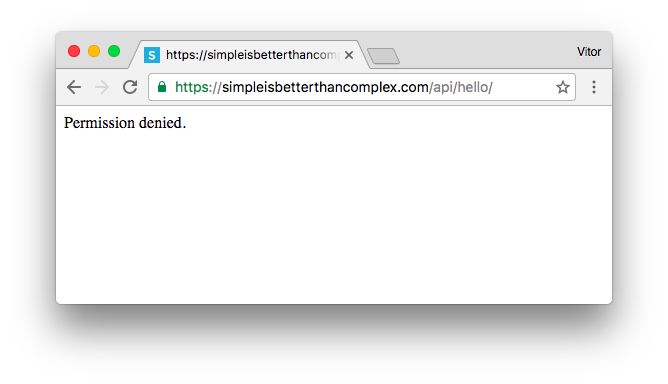
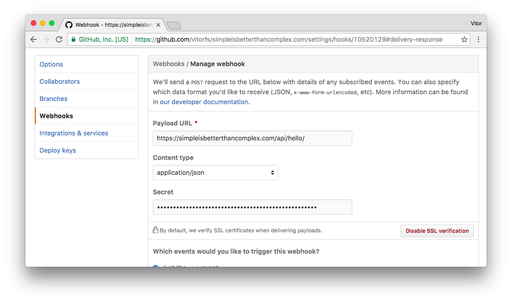
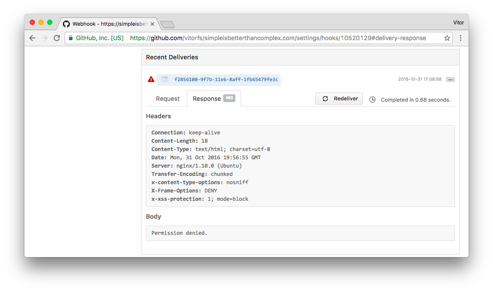

force_byte instead, so this way the code is compatible both with Python 2 and 3.
Webhooks are a convenient way to notify external services when a certain event occur. GitHub provides an easy way to create Webhooks for the git repositories. You can pick the events such as push, pull requests, and only be notified when they occur. It can be used to integrate external applications with GitHub, perform Continuous Integration tasks or automate deployments. In this tutorial I will show you how to securely handle those notifications in a Django application.
Creating the Webhook
Let’s create a basic example so we can get more comfortable with the concept.
First create a route to handle to Webhook POST data:
urls.py:
from core import views
urlpatterns = [
...
url(r'^api/hello/$', views.hello, name='hello'),
]views.py
from django.http import HttpResponse
from django.views.decorators.csrf import csrf_exempt
@csrf_exempt
def hello(request):
return HttpResponse('pong')Since by default Django protects views from receiving POST requests without the csrf middleware token, and in this case
we are creating a view to actually handle a POST request from outside our application, we need to decorate the view
function with the @csrf_exempt decorator.
Now we go to GitHub and access the repository we want to create the Webhook. Go to Settings then Webhooks. Then inside Webhooks we click on Add webhook:

Leave the Secret empty for now. Click on the green Add webhook button.
As soon as you create the Webhook, GitHub will fire a Ping Event. Let’s see how our handle responded to it, clicking on the just created Webhook and navigating to Recent Deliveries in the bottom of the page:

Alright! Everything is in a good shape for now.
PS: You won’t be able to test it localhost, the Payload URL must be accessible externally. Meaning your application will need to be deployed somewhere.
Securing the Webhook
While everything is working, our Payload URL is accessible by anyone. If we type the URL in a web browser, our server will eventually respond to it:

We don’t want that. The handler should recognize that the request came from GitHub, and only respond to them.
For that matter we will implement two security checks:
- Check if the IP Address is from GitHub;
- Check the signature of the POST request using a Secret Token that we will share with GitHub.
Install Dependencies
Install the following libraries using pip:
pip install requests ipaddressWhitelist GitHub IP Addresses
The GitHub API provide an endpoint to check in real time their services IP addresses. It is available at
https://api.github.com/meta:

The IPs (actually it’s just one, but anyway) inside hooks are the ones we need to whitelist. Now let’s import our handler:
views.py
from django.http import HttpResponse, HttpResponseForbidden
from django.views.decorators.csrf import csrf_exempt
import requests
from ipaddress import ip_address, ip_network
@csrf_exempt
def hello(request):
# Verify if request came from GitHub
forwarded_for = u'{}'.format(request.META.get('HTTP_X_FORWARDED_FOR'))
client_ip_address = ip_address(forwarded_for)
whitelist = requests.get('https://api.github.com/meta').json()['hooks']
for valid_ip in whitelist:
if client_ip_address in ip_network(valid_ip):
break
else:
return HttpResponseForbidden('Permission denied.')
return HttpResponse('pong')PS: Make sure the client’s IP address is being forwarded to the application, in case you are serving it behind a proxy server. For NGINX you can add this to the server configuration:
proxy_set_header X-Real-IP $remote_addr;We can go to GitHub and send another Ping event – just to make sure we didn’t break anything. Go to Recent Deliveries and click on Redeliver:

Success. Now let’s try to access the handler in the Web browser, using our network:

But we can’t always trust in IP addresses. At least that’s what the security folks tell us. Since I’m not a sysadmin or security expert, let’s add another layer of security, just in case. Better be safe than sorry.
Generate a Secret Token
You can pick any long string or generate it using Django crypto tools, like so:
$ python manage.py shell
In [1]: from django.utils.crypto import get_random_string
In [2]: get_random_string(50)
Out[2]: u'nuiVypAArY7lFDgMdyC5kwutDGQdDc6rXljuIcI5iBttpPebui'
In [3]: exit()Add the secret token to the project’s settings.
settings.py
GITHUB_WEBHOOK_KEY = 'nuiVypAArY7lFDgMdyC5kwutDGQdDc6rXljuIcI5iBttpPebui'PS: Don’t commit sensitive information to public repositories. In other words, don’t add it directly to the settings.py file, instead use environment variable or use python-decouple. Learn more about how to separate configuration from code reading this article I published a while ago: Package of the Week: Python Decouple.
Verify the Request Signature
I’m not going into much detail about the implementation. It basically implements what GitHub suggests on Securing your webhooks.
import hmac
from hashlib import sha1
from django.conf import settings
from django.http import HttpResponse, HttpResponseForbidden, HttpResponseServerError
from django.views.decorators.csrf import csrf_exempt
from django.utils.encoding import force_bytes
@csrf_exempt
def hello(request):
# Verify if request came from GitHub
# ...
# Verify the request signature
header_signature = request.META.get('HTTP_X_HUB_SIGNATURE')
if header_signature is None:
return HttpResponseForbidden('Permission denied.')
sha_name, signature = header_signature.split('=')
if sha_name != 'sha1':
return HttpResponseServerError('Operation not supported.', status=501)
mac = hmac.new(force_bytes(settings.GITHUB_WEBHOOK_KEY), msg=force_bytes(request.body), digestmod=sha1)
if not hmac.compare_digest(force_bytes(mac.hexdigest()), force_bytes(signature)):
return HttpResponseForbidden('Permission denied.')
# If request reached this point we are in a good shape
return HttpResponse('pong')Add the Secret Token to GitHub
Go to the Webhook details page on GitHub and put the secret token you are using there and save the changes:

You can play with Secret Token on the GitHub side, just to make sure it is working correctly. For example, here I changed the Secret Token on GitHub and got a Permission denied in the request:

Meaning we are in a good shape. Let’s rollback and give the correct Secret Token to GitHub again and let’s move forward.
Accept POST Request Only
Finally, since we are not testing it anymore using the Web browser, we can now disallow the other HTTP methods:
from django.views.decorators.http import require_POST
@require_POST
@csrf_exempt
def hello(request):
# ...
return HttpResponse('pong')You can implement it inside a Class-Based View as well. By using the post method only you will be automatically disallowing the other methods.
Processing GitHub Events
Now that the Webhook is protected, we can play around with the events:
@require_POST
@csrf_exempt
def hello(request):
# Do all the security stuff...
# Process the GitHub events
event = request.META.get('HTTP_X_GITHUB_EVENT', 'ping')
if event == 'ping':
return HttpResponse('pong')
elif event == 'push':
# Do something...
return HttpResponse('success')
# In case we receive an event that's neither a ping or push
return HttpResponse(status=204)You can see the full list of events in the GitHub Webhooks Docs.
Grab the Complete Code
Here is what the hello function should look like:
import hmac
from hashlib import sha1
from django.conf import settings
from django.http import HttpResponse, HttpResponseForbidden, HttpResponseServerError
from django.views.decorators.csrf import csrf_exempt
from django.views.decorators.http import require_POST
from django.utils.encoding import force_bytes
import requests
from ipaddress import ip_address, ip_network
@require_POST
@csrf_exempt
def hello(request):
# Verify if request came from GitHub
forwarded_for = u'{}'.format(request.META.get('HTTP_X_FORWARDED_FOR'))
client_ip_address = ip_address(forwarded_for)
whitelist = requests.get('https://api.github.com/meta').json()['hooks']
for valid_ip in whitelist:
if client_ip_address in ip_network(valid_ip):
break
else:
return HttpResponseForbidden('Permission denied.')
# Verify the request signature
header_signature = request.META.get('HTTP_X_HUB_SIGNATURE')
if header_signature is None:
return HttpResponseForbidden('Permission denied.')
sha_name, signature = header_signature.split('=')
if sha_name != 'sha1':
return HttpResponseServerError('Operation not supported.', status=501)
mac = hmac.new(force_bytes(settings.GITHUB_WEBHOOK_KEY), msg=force_bytes(request.body), digestmod=sha1)
if not hmac.compare_digest(force_bytes(mac.hexdigest()), force_bytes(signature)):
return HttpResponseForbidden('Permission denied.')
# If request reached this point we are in a good shape
# Process the GitHub events
event = request.META.get('HTTP_X_GITHUB_EVENT', 'ping')
if event == 'ping':
return HttpResponse('pong')
elif event == 'push':
# Deploy some code for example
return HttpResponse('success')
# In case we receive an event that's not ping or push
return HttpResponse(status=204)It’s also available on GitHub: gist.github.com/vitorfs/145a8b8f0865cb65ee915e0c846fc303
Conclusions and Further Reading
This is the base of what a Webhook handler should look like. Of course you can take a step further and improve it. Perhaps create some Class-Based Views to improve the reusability (if you intend to handle several hooks).
The code I implemented in this post was highly inspired by this Flask implementation: github.com/carlos-jenkins/python-github-webhooks.
Learn more on GitHub Webhooks Guide.
 How to Extend Django User Model
How to Extend Django User Model
 How to Setup a SSL Certificate on Nginx for a Django Application
How to Setup a SSL Certificate on Nginx for a Django Application
 How to Deploy a Django Application to Digital Ocean
How to Deploy a Django Application to Digital Ocean